Kömürözü Ormanı
Kömürözü Ormanı, Yıldızçiyi Vadisi'nin güneybatı tarafında bulunan büyük bir bölgedir. Kuzeyden çiftlik, doğudan Pelikan Kasabası, güneyden Lağım ve kuzeybatıdan Gizli Koru'ya çıkan çıkışları bulunur. Kömürözü Ormanı, Yeşil Soğanın bulunabildiği tek yerdir.
Kömürözü Ormanı'nda gerçekleşen üç festival bulunur: Bahar 24'de Çiçek Dansı, Yaz 20-21'de Alabalık Yarışı, Kış 8'de Buz Şöleni.
Oyunun başında orman boyunca çerçöp, taş ve yabani ot bulunur. Temizlense bile Bahar 1'de çerçöp tekrar belirir.
Özellikler
| Görsel | İsim | Açıklama | Oturanlar |
|---|---|---|---|
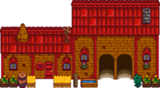 |
Marnie'nin Çiftliği | Haritanın kuzeydoğu köşesindedir. Buradan hayvan ve hayvanlar ile ilgili erzaklar satın alınabilir. Burada Marnie ile yeğenleri Jas ve Shane yaşar. | |
 |
Leah'nın Barakası | Pelikan Kasabası'na giden yolun güneyindedir. Burada Leah yaşar. | |
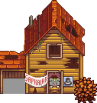 |
Yıkık Ev | Göletin güneybatı tarafındadır. En az bir başarım kazanıldığında kullanılmaya başlar. Bunun ardından ise Şapka Faresi, oyuncuya kazandığı başarımlara göre şapkalar satar. | 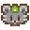 Şapka Faresi |
 |
Büyücü'nün Kulesi | Haritanın batı tarafındadır. Burada Büyücü yaşar. "Büyücüyle Tanışma" görevini tamamladıktan sonra girilebilir. | |
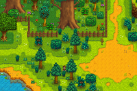 |
Dev Ağaç | Kömürözü Ormanı'nın kuzeyinde, gölet ile Marnie'nin Çiftliği'nin arasındadır. Rastgele Olaylar#Şiddetli bir fırtına ağacı vurduktan sonra dev kütüğe dönüşür ve "Dev Kütük" görevini açar. | |
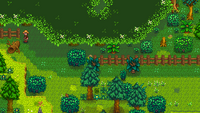 |
Gizli Koru | Ormanın güneybatı köşesindedir. Girişi engelleyen büyük kütüğün çelik veya daha yüksek seviyede olan bir balta ile kırılmasının ardından girilebilir. | |
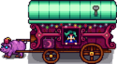 |
Gezgin Araba | Her cuma ve pazar günü 06.00 ve 20.00 arasında haritanın kuzey tarafında belirir. Gezgin Tüccar, oyuncuya rastgele ögeler satar. | 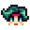 Gezgin Tüccar |
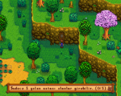 |
Ustalık Mağarası | Lağım girişinin kuzeyindedir. Üzerinde "Sadece 5 yolun ustası olanlar girebilir." yazan bir tabela bulunur. |
Çöp Ayısı
Çöp Ayısı; Kömürözü Ormanı'nın altında, Yeşil Soğan arazisinin ve Lağım girişinin oradadır. Çöp Ayısı, 3. yılda başlamak üzere yağmursuz günlerde belirir. Çöp Ayısı ile iletişime geçilince istediği bir ögeyi gösteren bir diyalog balonu gösterir. Çöp Ayısı'na istediği ögeyi verdikten sonra Çöp Ayısı'na bir kere daha tıklayınca bir diğer isteğini gösterecektir. Dört isteği de tamamlamak Çöp Ayısı'nın flüt çaldığı, yapraklardan yapılma bir şemsiye ile uçtuğu ve ardından suyun yanındaki erişelemeyen yerdeki çöpü kaldırıp yerine çalılık ve ağaçlar koyduğu bir ara sahneyi oynatır. Çöp Ayısı, şemsiye ile Pelikan Kasabası'na doğru uçmaya devam eder ve Pam'in ön bahçesindeki çöpleri temizler. Çirkin'in oyun alanı da geliştirilir.
Çöp Ayısı mevsime bağlı olarak 2 rastgele balık veya toplanılabilir öge, ardından da 2 yemek ister. Bu istekleri tamamlamak için bir zaman kısıtlaması yoktur. Ancak yine de Çöp Ayısı yağmurlu günlerde belirmediği için yağmurlu günlerde istekler yerine getirilemez. Bir istek tamamlanana kadar asla değişmez fakat mevsim değişirse ve önceki istek mevsime bağlı olarak seçilen bir öge ise değişir. Bu durumda Çöp Ayısı'nın yeni isteği yeni mevsime uygun olarak da değişir. Aşağıda Çöp Ayısı'nın isteyebileceği rastgele ve mevsime bağlı ögelerin bir listesi görüntülenebilir.
| Detaylar | ||||||||
|---|---|---|---|---|---|---|---|---|
Altın Küpü
Bahar 17'de Yıkık Ev'in yanındaki şelalede bir gökkuşağı ve sonunda da altın küpü belirir.[1] Oyuncu, altın küpü ile etkileşime geçtiğinde bir Cüce Cin Şapkası ve biraz altın elde eder. Bu, tekrar edilebilir. 1. yılda  200g verilir ve her yıl
200g verilir ve her yıl  25g artar. 93. yılda
25g artar. 93. yılda  2.500g altına ulaştığında artmayı durdurur.[2]
2.500g altına ulaştığında artmayı durdurur.[2]
Toplayıcılık
Kömürözü Ormanı'nda yerde belirebilecek toplanılabilir ögeler şunlardır[3]
- Baharda:
 Yabani Bayır Turpu (%50) ve
Yabani Bayır Turpu (%50) ve  Kara Hindiba (%50)
Kara Hindiba (%50) - Yazda:
 Itırşahi (%60) ve
Itırşahi (%60) ve  Baharat Meyvesi (%40)
Baharat Meyvesi (%40) - Güzde:
 Mantar (%50) ve
Mantar (%50) ve  Böğürtlen (%50)
Böğürtlen (%50) - Kışta:
 Çiğdem (%39),
Çiğdem (%39),  Kristal Meyve (%39) ve
Kristal Meyve (%39) ve  Çobanpüskülü (%22)
Çobanpüskülü (%22)
Toplanılabilir ögeler bahar ve güzde gece başı 1,8; yazda ve kışta gece başı 1,6 oran ile belirir.[4] Haritada ortaya çıkmaları mümkün olan yerler kırmızı ve magenta karelerde gösterilmiştir; orijinal ağaçlar bulunuyorsa magenta karelerde %90 daha az doğma ihtimali vardır çünkü o kareler, ağaçların arkalarında kalır ve görünmeleri zordur.
Yeşil Soğanlar baharda Kömürözü Ormanı'nda bulunabilir. Güneydoğudaki büyük adada yalnızca sürülebilir toprakta (haritadaki yeşil karelerde) belirebilir. Her gece var olan soğanlar silinir ve yeni soğanlar belirir. Bu soğanlar standart toplanılabilir ögeler değildir ve harita başı altı öge limitinde sayılmaz.
Orman aynı zamanda büyük bir ağaç yoğunluğuna sahiptir ve bu ağaçlar Odun ve bir takım diğer eşyalar için kırılabilir. Çiftliğin dışındaki önceden var olan bütün ağaçlar gibi, güdük kaldırılmışsa otomatik olarak tekrardan büyüyebilirler.
Eser Noktaları
Kömürözü Ormanı'nda Eser Noktaları kazılarak bulunabilecek eserler şunlardır:
- 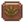 Palmiye Fosili (%0,6 + %3-5[5])
 Tarih Öncesi Kürek Kemiği (%3-6[5])
Tarih Öncesi Kürek Kemiği (%3-6[5])- 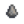 İlkel El Baltası (%3)
 Eski Bebek (%2,4)
Eski Bebek (%2,4)- 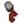 İlkel Araç (%2,1)
- 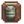 Trilobit (%1,9)
 Okbaşı (%1,6)
Okbaşı (%1,6) Çiğneme Çubuğu (%1,5)
Çiğneme Çubuğu (%1,5) Elf Mücevheri (%0,8)
Elf Mücevheri (%0,8) Eski Davul (%0,7)
Eski Davul (%0,7)- 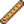 Kemik Kaval (%0,7)
 Eski Tohum (%0,7)
Eski Tohum (%0,7) Eski Kılıç (%0,7)
Eski Kılıç (%0,7) Süs Yelpazesi (%0,7)
Süs Yelpazesi (%0,7) Tarih Öncesi Kaval Kemiği (%0,6)
Tarih Öncesi Kaval Kemiği (%0,6)- 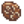 Amfibi Fosili (%0,6)
- 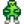 Garip Bebek (yeşil) (%0,06)
- 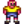 Garip Bebek (sarı) (%0,06)
Diğer bulunması mümkün ögeler de şunlardır:
- 1-3
 Kil (%14-29[5])
Kil (%14-29[5]) - Kayıp Kitap (%20 + %3-7[5]); bütün Kayıp Kitaplar bulunduğunda, Kayıp Kitaplar yerine
 Karışık Tohumlar çıkmaya başlar.
Karışık Tohumlar çıkmaya başlar. - Yalnızca Kışta:
 Kış Kökü (%18)
Kış Kökü (%18) - Yalnızca Kışta:
 Kar Patatesi (%12)
Kar Patatesi (%12) - 1-3
 Taş (%5-10[5])
Taş (%5-10[5]) - 1-3
 Bakır Cevheri (%2,4-5[5])
Bakır Cevheri (%2,4-5[5]) - Yalnızca Baharda: 2-5
 Pirinç Filizis (%4)
Pirinç Filizis (%4) - Daha önce bulunmamış bir 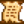 Gizli Not: %3'lük bir şansa kadar, eğer oyuncu büyütece sahip ise.
Eser noktaları gece başı 0,1 gibi bir oran ile belirir, kışta ise bu oran gece başı 1,0'a çıkar.[6]
Balıkçılık
Kömürözü Ormanı, farklı balıklara sahip farklı tür su (nehir ve gölet) bulunduran tek yerdir.
Alabalık Yarışı ve Buz Şöleni festivalleri sırasında da balık tutmak mümkündür.
Ormanın güneyi okyanus ile çevrilidir. Tepeden okyanusa olta atmak (Çiçek Dansı'nın gerçekleştiği bölgeye giden köprünün yakınında olta atarak) mümkün olsa da burada okyanus balıkları yerine nehir balıkları yakalanabilir.
Nehir
Kömürözü Ormanı'nın birincil balıkçılık yeri, nehridir. Pelikan Kasabası'nda akan nehrin devamıdır ve genelde aynı nehir balıklarını bulundururlar. Kasabada bulunamayan ancak ormanda bulunan balıklar Kefal ve Turuncubalıktır; kasabada bulunan ancak ormanda bulunmayan balık ise Ufak Ağızlı Levrektir (ancak bu da orman göletinde bulunabilir). Ayrıca orman nehrinde kış mevsiminde efsanevi balıklardan olan Buzulbalık ve II. efsanevi balıklardan olan Buzulbalığın Oğlu tutulabilir.
Gölet
Kömürözü Ormanı'ndaki ikinci balıkçıllık yeri ise güneybatı köşesindeki göletidir. Bu suda nehire göre daha az sayıda balık türü bulunur: mevsime bağlı olarak Sazanbalığı, Kedibalığı, Alacakaranlık Sazanı, Tatlısu Levreği, Turna Balığı, Ufak Ağızlı Levrek ve Kömür Balığı.
Şelaleler
Kömürözü Ormanı'ndaki son balıkçılık yeri de Yıkık Ev'in yakınından akan şelalelerdir. Burada herhangi bir zamanda Taşbalığı ve güzde bütün günlerde Somon Balığı yakalanabilir.
| Saat | |||||||||||||||||||||
|---|---|---|---|---|---|---|---|---|---|---|---|---|---|---|---|---|---|---|---|---|---|
| 06 | 07 | 08 | 09 | 10 | 11 | 12 | 13 | 14 | 15 | 16 | 17 | 18 | 19 | 20 | 21 | 22 | 23 | 00 | 01 | ||
| 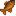 Güneşbalığı | Nehir | Sadece güneşli gün | |||||||||||||||||||
| 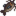 Kedibalığı | Nehir | Sadece yağmurlu gün | |||||||||||||||||||
| 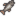 Kefal | Nehir | ||||||||||||||||||||
| 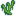 Yeşil Su Yosunu | Nehir/Gölet | ||||||||||||||||||||
| 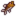 Ufak Ağızlı Levrek | Gölet | ||||||||||||||||||||
| 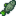 Tirsi | Nehir | Sadece yağmurlu gün | |||||||||||||||||||
| 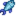 Mercanbalığı | Nehir | ||||||||||||||||||||
| 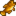 Taşbalığı | Şelale | ||||||||||||||||||||
| 06 | 07 | 08 | 09 | 10 | 11 | 12 | 13 | 14 | 15 | 16 | 17 | 18 | 19 | 20 | 21 | 22 | 23 | 00 | 01 | ||
| 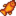 Turuncubalık | Nehir | ||||||||||||||||||||
| 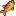 Renkli Alabalık | Nehir | Sadece güneşli gün | |||||||||||||||||||
| Güneşbalığı | Nehir | Sadece güneşli gün | |||||||||||||||||||
| Kefal | Nehir | ||||||||||||||||||||
| Yeşil Su Yosunu | Nehir/Gölet | ||||||||||||||||||||
| 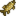 Turna Balığı | Nehir/Gölet | ||||||||||||||||||||
| Tirsi | Nehir | Sadece yağmurlu gün | |||||||||||||||||||
| Mercanbalığı | Nehir | ||||||||||||||||||||
| Taşbalığı | Şelale | ||||||||||||||||||||
| 06 | 07 | 08 | 09 | 10 | 11 | 12 | 13 | 14 | 15 | 16 | 17 | 18 | 19 | 20 | 21 | 22 | 23 | 00 | 01 | ||
| 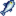 Somon Balığı | Nehir | ||||||||||||||||||||
| 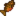 Kaplanbalığı | Nehir | ||||||||||||||||||||
| Kedibalığı | Nehir | Sadece yağmurlu gün | |||||||||||||||||||
| Kefal | Nehir | ||||||||||||||||||||
| 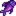 Alacakaranlık Sazanı | Gölet | ||||||||||||||||||||
| Yeşil Su Yosunu | Nehir/Gölet | ||||||||||||||||||||
| Ufak Ağızlı Levrek | Gölet | ||||||||||||||||||||
| Tirsi | Nehir | Sadece yağmurlu gün | |||||||||||||||||||
| 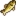 Kömür Balığı | Nehir/Gölet | Sadece yağmurlu gün | |||||||||||||||||||
| Mercanbalığı | Nehir | ||||||||||||||||||||
| Somon Balığı | Nehir/Şelale | ||||||||||||||||||||
| Taşbalığı | Şelale | ||||||||||||||||||||
| 06 | 07 | 08 | 09 | 10 | 11 | 12 | 13 | 14 | 15 | 16 | 17 | 18 | 19 | 20 | 21 | 22 | 23 | 00 | 01 | ||
| Kaplanbalığı | Nehir | ||||||||||||||||||||
| Kefal | Nehir | ||||||||||||||||||||
| Alacakaranlık Sazanı | Gölet | ||||||||||||||||||||
| Yeşil Su Yosunu | Nehir/Gölet | ||||||||||||||||||||
| 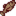 Dipbalığı | Nehir | ||||||||||||||||||||
| 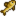 Tatlısu Levreği | Nehir/Gölet | ||||||||||||||||||||
| Turna Balığı | Nehir/Gölet | ||||||||||||||||||||
| Mercanbalığı | Nehir | ||||||||||||||||||||
| Taşbalığı | Şelale | ||||||||||||||||||||
Sır
Kömürözü Ormanı'nın en güney noktasında lağım girişinden okyanusa olta atılırsa bir İridyum Krobus heykeli tutulur. Ancak bunun için balıkçılık seviyesi an az 15 olmalıdır ve bu da yalnızca geçici olarak etkiler ile mümkündür.
Referanslar
- ↑ Forest::DayUpdate oyun kodunu inceleyin.
- ↑ Her yıl artan altın miktarı için Object::checkForAction oyun kodundaki "(O)PotOfGold" durumunu inceleyin. Bu altınların değeri için Farmer::OnItemReceived oyun kodundaki "(O)PotOfGold" durumunu inceleyin.
- ↑ Toplanılabilir her öge için, verilen oran o mevsim belirebilen bütün toplanılabilir ögelerin genel oranıdır. Girdi bilgisi Locations.xnb, GameLocation::spawnObjects'deki kod ile çalıştırılmış.
- ↑ Kömürözü Ormanı'ndaki 14400 kareden 2025'i (%14) standart toplanılabilir ögelerin belireceği karelerdir. Toplanılabilir ögeler hakkında daha fazla bilgi için Toplayıcılık sayfasını inceleyin.
- ↑ 5,0 5,1 5,2 5,3 5,4 5,5 Eser Noktalarından ekstra öge elde etme mevsime bağlıdır. Maksimum şans yaz ve güzdedir. Kışta, bu şans %50 daha az; baharda ise %6 daha azdır. Daha fazla bilgi için Eser Noktası sayfasını inceleyin.
- ↑ Kömürözü Ormanı'ndaki 14400 kareden 574'ü (%4) bahar, yaz ve güzde Eser Noktaları için ortaya çıkma kareleridir. 4065'i (%28) kış için ortaya çıkma kareleridir. Daha fazla bilgi için Eser Noktası sayfasını inceleyin.
Geçmiş
- 1.4: Çöp Ayısı eklendi. Artık Bahar 1'de çerçöp yenileniyor.
- 1.5: Artık lağımın girişinden okyanusa olta atılırsa İridyum Krobus tutulabilir.
- 1.6: Lağım girişinin kuzeyinde Ustalık Mağarası ve göl ile çiftlik girişinin arasına Dev Ağaç eklendi. Alabalık Yarışı ve Altın Küpü eklendi. Taşbalığı eklendi. Somon Balığı artık şelalede yakalanabilir.
| Mekanlar | |
|---|---|
| Mekanlar | Cadı'nın Bataklığı • Çiftlik Göleti • Çiftlik • Çöl • Dağ • Demiryolu • Gizli Koru • Kafatası Mağarası • Kömürözü Ormanı • Kumsal • Lağım • Madenler • Mağara • Maden Arabası • Mezarlık • Zencefil Adası • Ustalık Mağarası • Mutant Böcek Yuvası • Ormanönü • Otobüs Durağı • Pelikan Kasabası • Taş Ocağı • Taş Ocağı Madeni • Tünel |